Boho bedroom decor is built on layering rather than matching: textures, patterns, materials, and a few well-chosen global pieces all stacked together until the room feels collected over time rather than bought in one trip.
None of it requires a strict formula. The style has room for mismatched furniture, an odd feather here, a thrifted mirror there, as long as the overall palette and materials stay loosely connected.

1. Go Wild With Wallpaper
If you're ready to fully commit, a bold boho wallpaper can turn an entire bedroom into its own kind of retreat.
A floral, jungle, or desert-themed print leans hardest into the style, and a peel-and-stick version offers a lower-commitment way to try the same look.
It's the most dramatic option on this list, but also one of the fastest ways to make a room feel completely transformed.
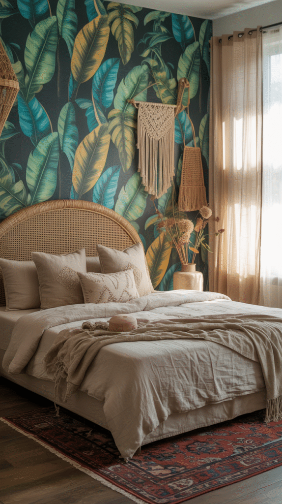
2. Choose a Mirror With Personality
A generic rectangular mirror doesn't do much for a boho room, but an interesting frame can become a genuine focal point.
A sunburst mirror, an antique find, or an arched full-length style all bring far more character than a standard frame.
Beyond the style itself, a well-placed mirror also bounces light around the room and makes the space feel larger.
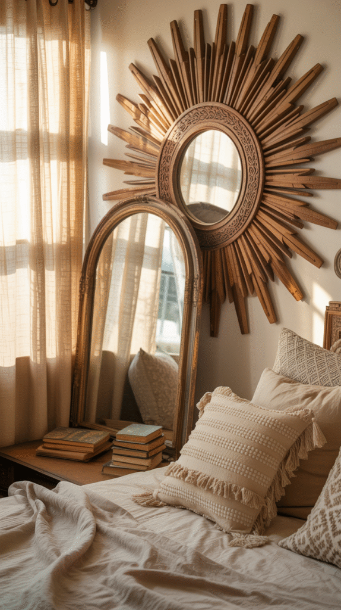
3. Stick to Natural Materials
Skipping plastic and synthetic materials where possible keeps a boho room feeling authentic rather than mass-produced.
Wood, jute, cotton, wool, and leather all age well over time, developing character rather than just wearing out.
They also bring a cozy, earthy warmth that synthetic materials rarely manage to replicate.
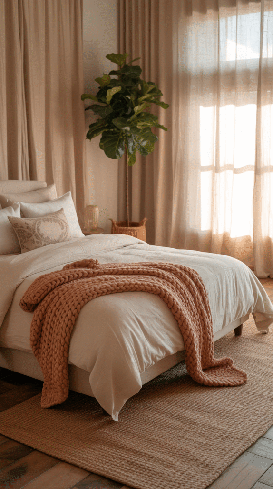
4. Let Books Be Decor
Books don't have to stay confined to a shelf to earn their place in the room.
Stacking them sideways, grouping them by color, or mixing them in with candles and small vases turns them into a styling element on their own.
Placing a few underneath a plant pot adds a bit of extra height and an easy, slightly artful touch.
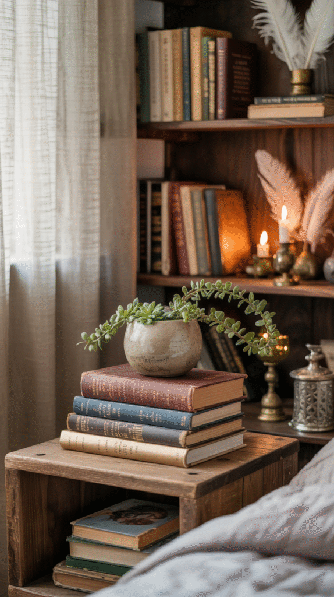
5. Add Dreamcatchers and Crystals
Even without any particular interest in their symbolism, dreamcatchers and crystals bring a distinct visual texture to a boho room.
A dreamcatcher hung above the bed, a small display of amethyst, rose quartz, or citrine on a shelf, all add a bit of personality.
The goal is simply a space that feels calm and considered. Whatever meaning gets attached to the objects is entirely optional.
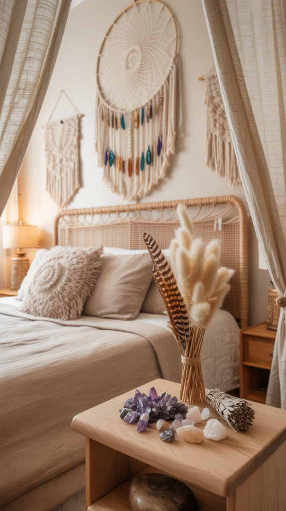
6. Add Floor Pillows and Poufs
Floor cushions, poufs, and oversized pillows bring a casual, laid-back seating option that a boho room tends to call for.
They work especially well in a reading corner or a small meditation nook, somewhere a full chair might feel too formal.
It's an easy, low-cost way to add extra seating without introducing another large piece of furniture.
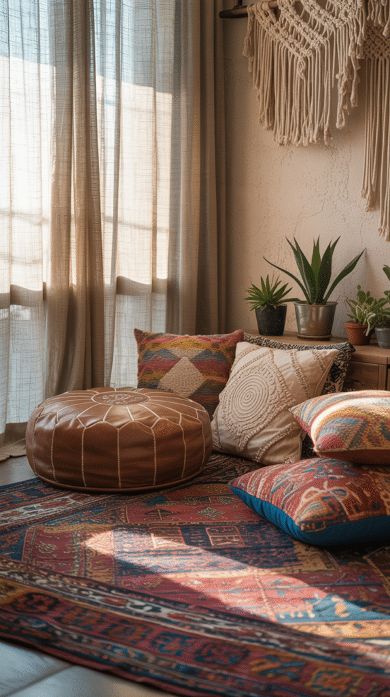
7. Add Rattan and Wicker Accents
For texture without going fully maximalist, rattan, bamboo, and wicker bring a natural, breezy feel to a room.
A rattan mirror frame, a wicker chair, a bedside table, or a set of hanging shelves all work well as smaller touches.
They're light both visually and literally, which makes them easy to add without overwhelming the rest of the room.
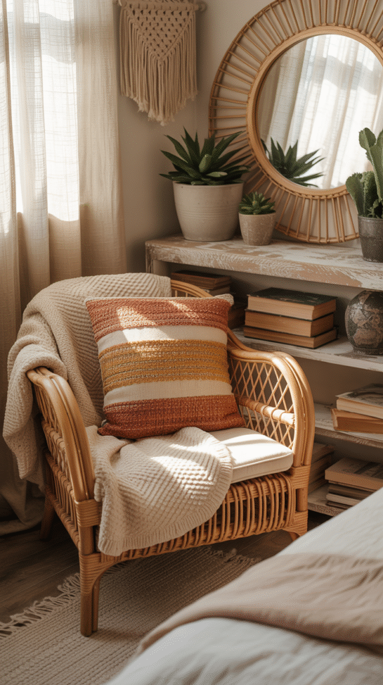
8. Build an Eclectic Gallery Wall
A boho gallery wall should never look too neat or too planned.
Mixing art prints, vintage frames, pressed flowers, woven decor, and even an odd feather or two keeps the wall feeling personal rather than like a copied template.
The goal is a wall that genuinely reflects whoever lives in the room, not a polished recreation of something seen online.
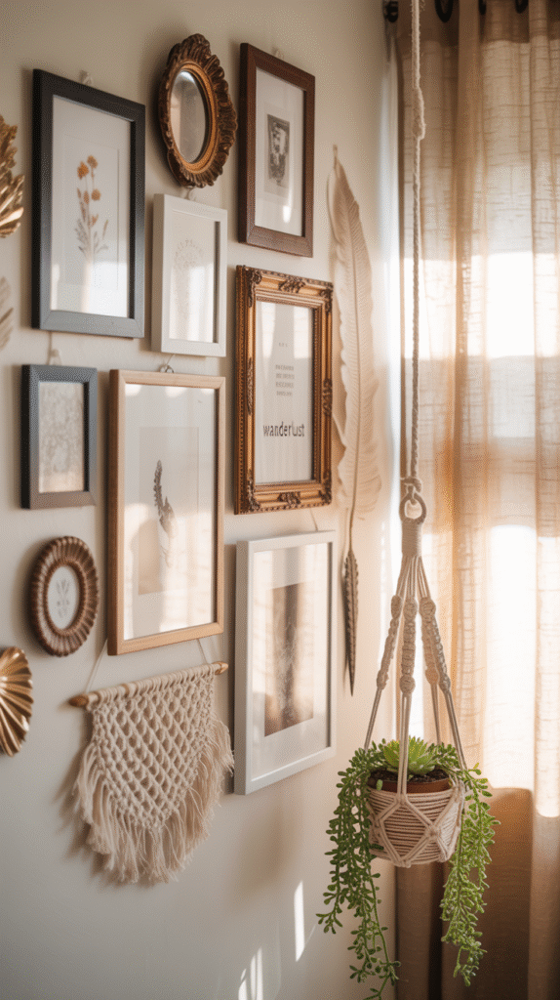
9. Add a Statement Rug
A bold, patterned rug can rescue an otherwise plain floor, especially in a rental where replacing the actual flooring isn't an option.
Layering two rugs together adds even more texture if you're willing to commit a little further.
A vintage, tribal, or faded Persian-style rug all read as boho-appropriate, and the right one adds instant coziness underfoot.
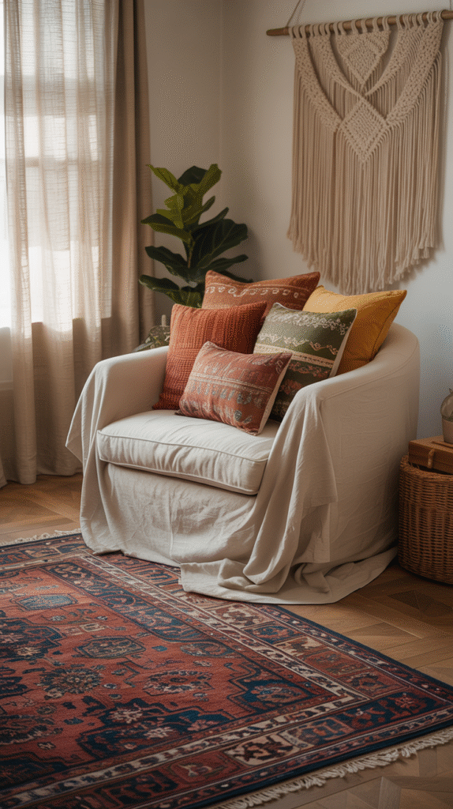
10. Mix In Handmade and Artisan Pieces
Choosing hand-carved, handwoven, or hand-dyed pieces over mass-produced decor adds real depth to a boho room.
There's an authenticity in slightly imperfect, human-made objects that factory-made pieces rarely capture.
Even one or two artisan pieces mixed into an otherwise simple room can shift the whole feel toward something more considered.
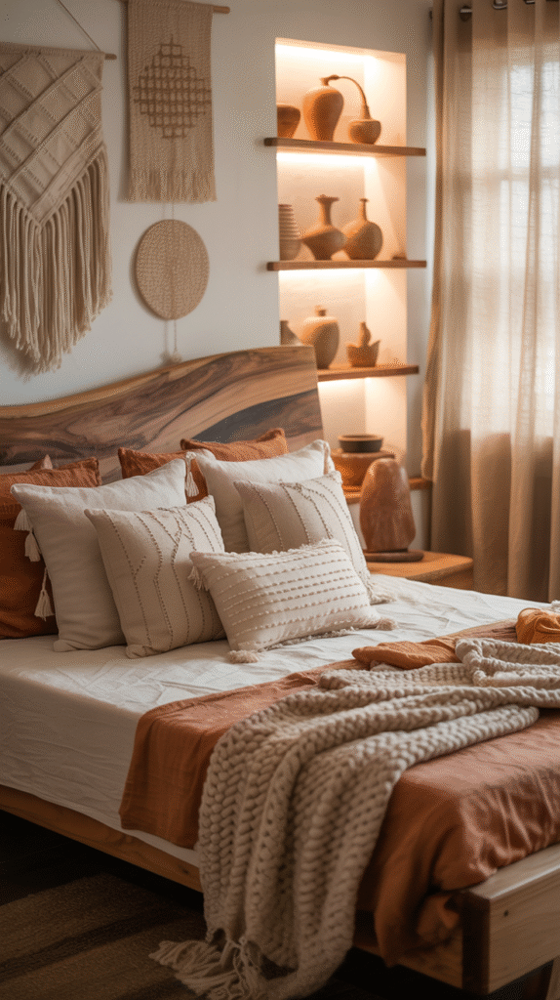
11. Try a Canopy Bed
There's something genuinely romantic about a bed draped in soft, gauzy fabric.
Even a basic bed frame gets transformed with a canopy or a simple sheer curtain hung above it.
Adding a string of fairy lights along the canopy frame pushes the effect even further without much extra work.
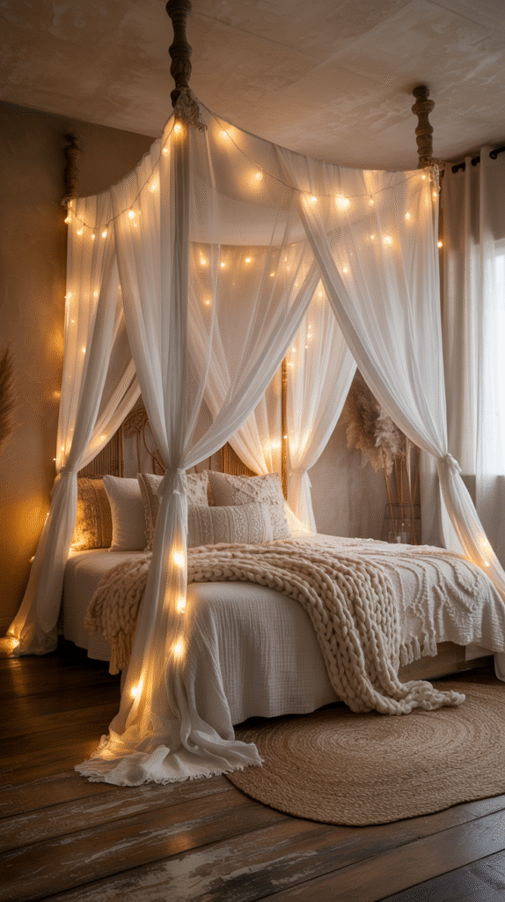
12. String Some Lights
Harsh overhead lighting works against the relaxed mood a boho bedroom is going for.
Fairy lights, globe bulbs, or soft lanterns draped across a wall, mirror, or bed frame add warm, low-key ambiance instead.
Sticking to warm white tones rather than a cooler light keeps the effect feeling cozy rather than like a dorm room string-light setup.
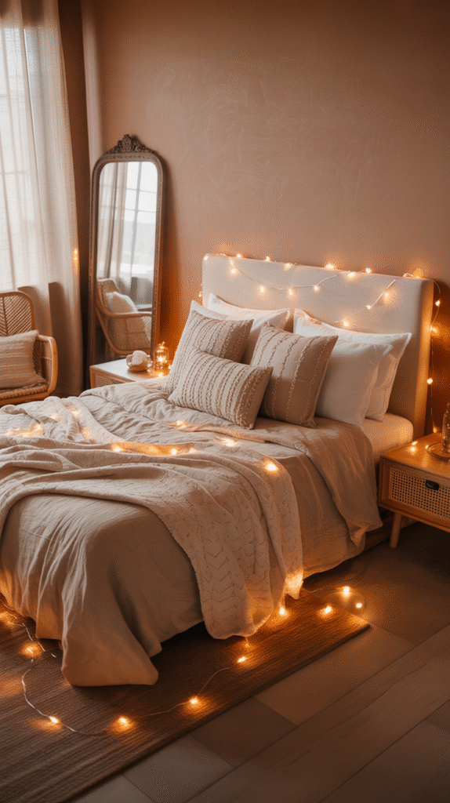
13. Hang a Tapestry as an Easy Accent Wall
If you'd rather skip painting or wallpapering, a large tapestry solves the same problem with zero commitment.
A single tapestry covers a surprising amount of wall space while adding real visual interest on its own.
A mandala, celestial, or desert-inspired pattern leans into the boho aesthetic especially well, and the whole thing can come down in minutes if the room's direction changes later.
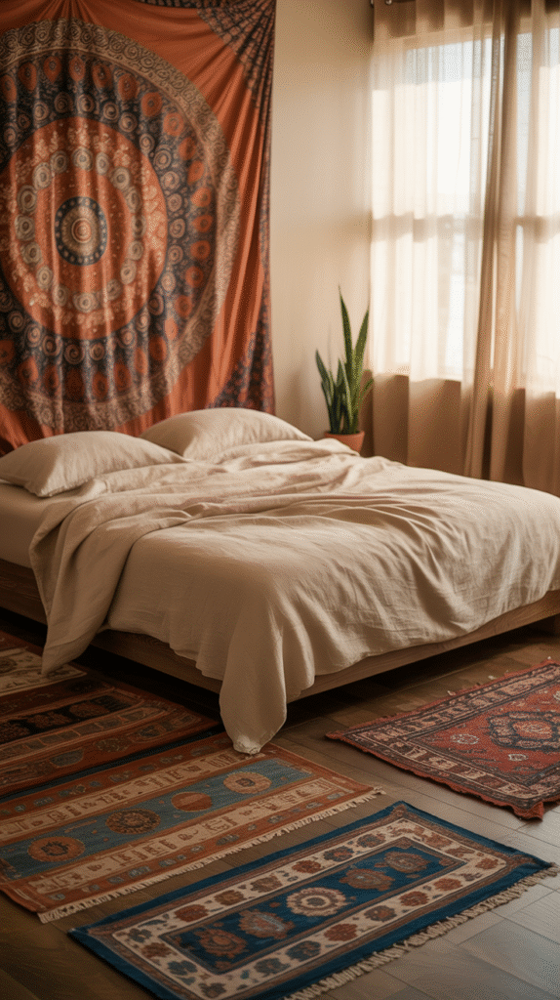
14. Go Global With Decor
Pieces that carry a sense of place add real soul to a boho bedroom.
A Moroccan pouf, a Turkish rug, an Indian kantha quilt, each one brings a bit of history and craftsmanship that mass-produced decor can't match.
The room ends up feeling well-traveled and considered, whether or not any of the pieces were actually picked up abroad.
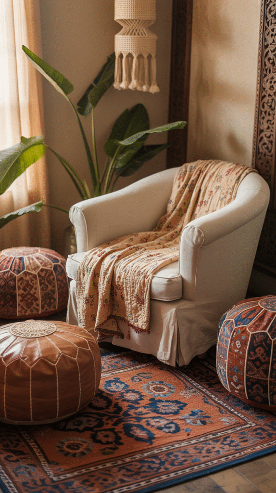
15. Mix and Mismatch Furniture
Boho decor is the direct opposite of a matched showroom set.
Pairing a vintage dresser with a modern rattan chair, or placing an antique side table next to a sleek, neutral bed, builds the kind of collected look the style depends on.
Flea markets and thrift stores tend to be the best source for furniture with exactly this kind of mismatched character.
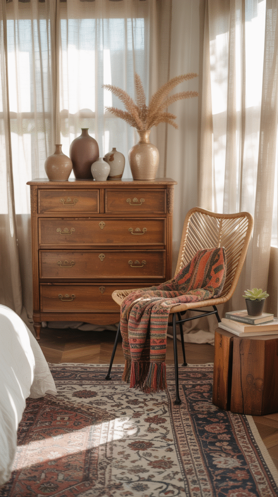
16. Let Plants Take Over
A boho bedroom without greenery rarely feels complete.
Snake plants, pothos, and monstera are all reliable, low-maintenance options that bring real life into the space.
Hanging planters add instant style on top of the greenery itself, and even a faux version works fine if you'd rather skip the watering schedule.
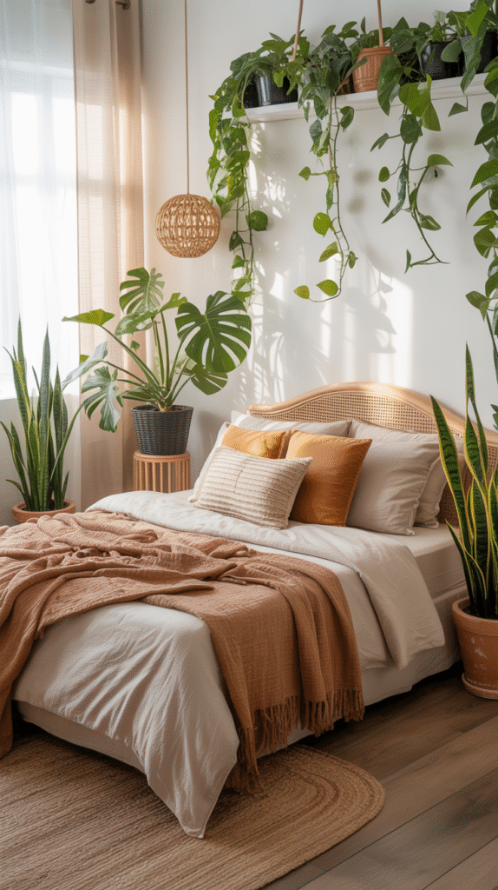
17. Go Low With the Bed Frame
Ditching the bulky bed frame for something low-profile is one of the more recognizable boho moves.
A simple platform bed, or even a mattress set directly on a frame close to the floor, creates a grounded, relaxed look that a tall frame simply can't replicate.
It's a small structural change, but it shifts the whole feel of the room toward something calmer and more deliberate.
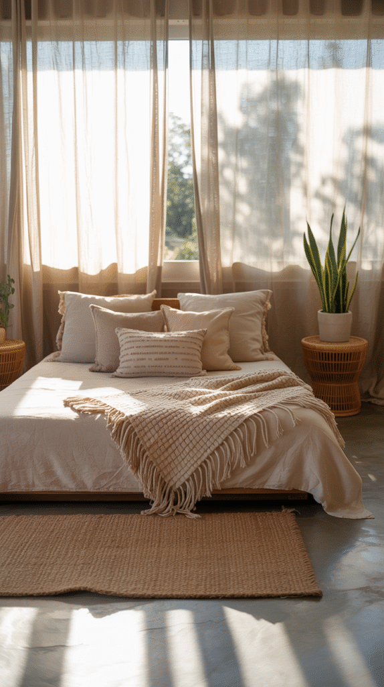
18. Try Macrame Everything
Macrame is close to essential in a boho bedroom. A wall hanging, a plant holder, even a macrame headboard all bring instant texture and a handmade feel.
Pre-made pieces work just as well as a DIY version if you're comfortable with knotting your own.
Even one piece goes a long way toward signaling the room's overall style without requiring a full redesign.
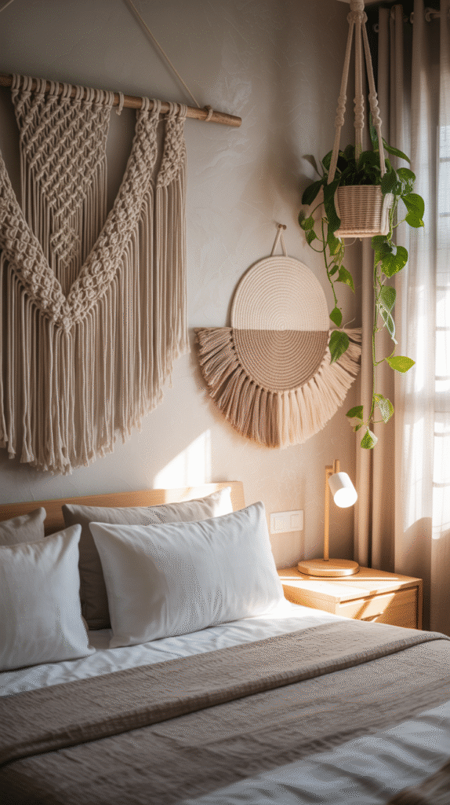
19. Layer Your Textiles
Layering is really the whole foundation of the boho look. Blankets, quilts, and pillows in a mix of textures, cotton, macrame, fringe, faux fur, build up a bed that feels collected rather than matched.
Sticking to earthy tones like terracotta, olive, or mustard keeps the mix cohesive, and combining a few different patterns, tribal, floral, geometric, tends to work better here than it would in almost any other style.
A chunky knit throw casually tossed at the foot of the bed is the easiest finishing touch. If a layered bed starts to feel like it might be too much, that's usually a sign it's exactly right.
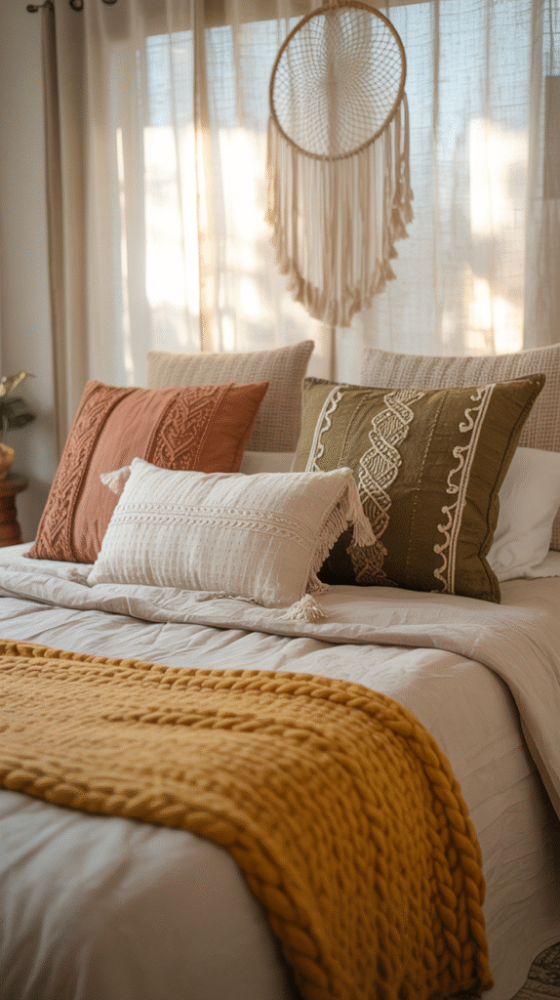
20. Embrace Earth Tones
When in doubt, nature's own palette is the safest starting point for a boho bedroom.
Rust, tan, cream, sage, and clay form the base, with a bit of brass, copper, or gold worked in for warmth.
These tones are what keep a boho room feeling grounded and inviting rather than chaotic, even once a lot of different textures and patterns start layering in.
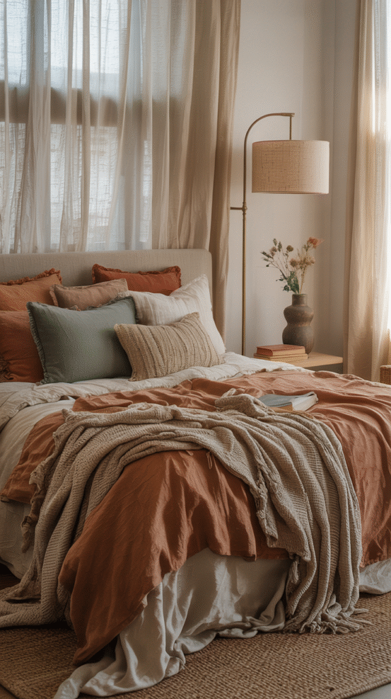
A Room Gathered Over Time, Not Styled in an Afternoon
None of these twenty ideas require redoing a bedroom from scratch to make a real impact. A layered bed, a macrame wall hanging, or one bold statement rug can shift the whole room toward boho on its own.
The style rewards a bit of imperfection and personal history over anything too polished. The goal is a room that feels like it was gathered over time, not styled in a single afternoon.